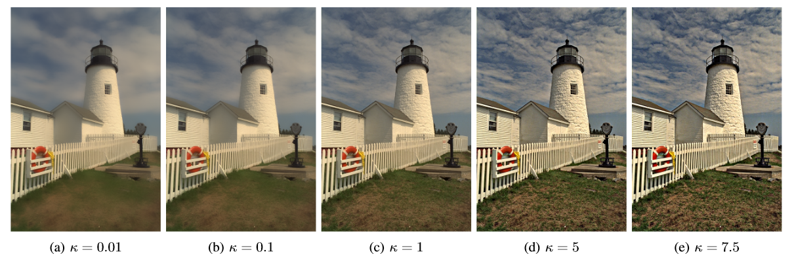

Guang Deng Fernando Galetto Mukhalad Al-nasrawi Waseem Waheed
IEEE Open Journal of Signal Processing (OJ-SP), 2021
Abstract: Smoothing and sharpening are two fundamental image processing operations. The latter is usually related to the former through the unsharp masking algorithm. In this paper, we develop a new type of filter which performs smoothing or sharpening via a tuning parameter. The development of the new filter is based on (1) a new Laplacian-based filter formulation which unifies the smoothing and sharpening operations, (2) a patch interpolation model similar to that used in the guided filter which provides edge-awareness capability, and (3) the generalized Gamma distribution which is used as the prior for parameter estimation. We have conducted detailed studies on the properties of two versions of the proposed filter (self-guidance and external guidance). We have also conducted experiments to demonstrate applications of the proposed filter. In the self-guidance case, we have developed adaptive smoothing and sharpening algorithms based on texture, depth and blurriness information extracted from an image. Applications include enhancing human face images, producing shallow depth of field effects, focus-based image enhancement, and seam carving. In the external guidance case, we have developed new algorithms for combining flash and no-flash images and for enhancing multi-spectral images using a panchromatic image.
Paper: [pdf]
Code: [Matlab Code] [Github Repository]
Sample result:
